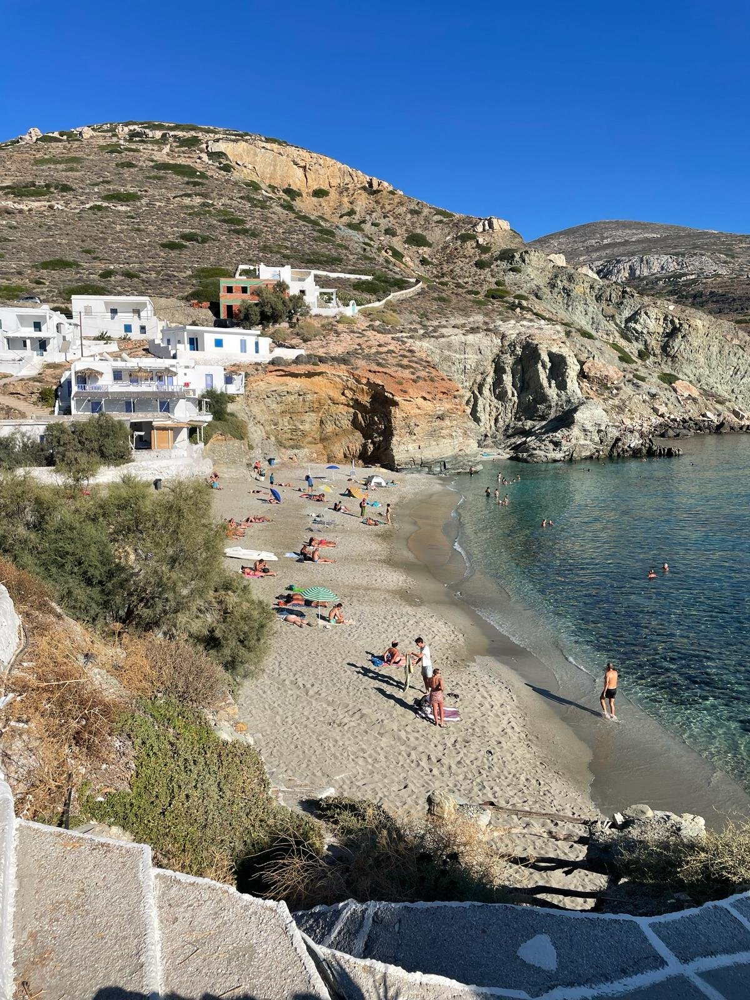
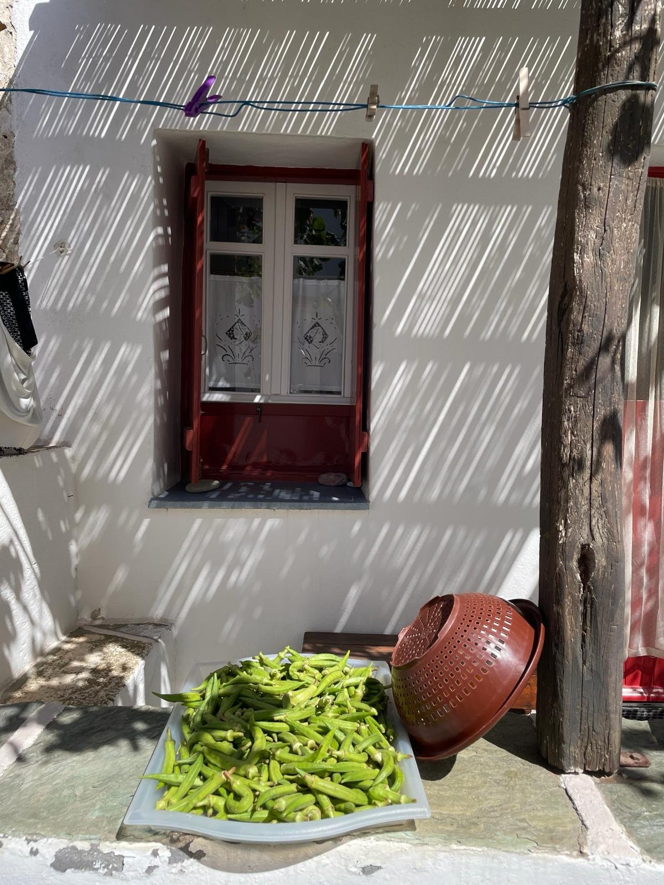
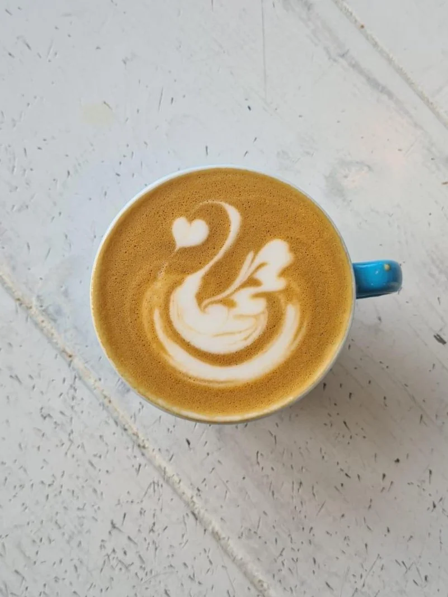

Colourful doorways
Let the lanes be part of the visit. The doorways and balconies are as much a reason to slow down as the next stop on your list.


Kanella travel tips / The Cyclades, Greece
A little gem of a Greek island.
Start in Chora, make time for the coast, and keep a few of our favourite names close to hand. Here is our photo-filled introduction to the island.
Start exploringLanes, doorways & little discoveries
One hour on the ferry from popular Santorini, a little gem of a Greek island, Folegandros.
Chora Town is at the centre with colourful doorways, Athenian boutiques, and a scenic hilltop church.
Make room in your plans for simply wandering. Look up at the balconies, follow the changing light across the whitewashed walls, and pause over the small details between the bigger sights.
The one-hour crossing is the journey described in our guide. Check the sailing time, timetable and onward arrangements for your own travel date before making plans.

Let the lanes be part of the visit. The doorways and balconies are as much a reason to slow down as the next stop on your list.
Leave a little room for browsing while you explore Chora. Malama Boutique is one of the names on Kanella’s favourites list.
Keep the scenic hilltop church in mind as you plan your exploring. Choose a pace and route that suit your group and the weather.
Places to stay, a beach, a restaurant and a boutique: use Kanella’s shortlist as a starting point for your own island plans.
Stay
One of Kanella’s two hotel favourites. Include it in your accommodation shortlist and check dates, room options and arrival arrangements directly.
Stay
Another name from our places-to-stay list. Compare the details that matter to your trip, from your preferred base to the practicalities of getting there.
Coast
Our beach pick for your island notebook. Before setting out, check the route, conditions and what you will need to take for your time by the water.
Eat
A restaurant on Kanella’s favourites list. Keep the name handy when planning a meal, and check opening times and any booking arrangements directly.
Browse
Make a note for a little browsing between your other plans. Check its location and opening times when putting together your day.
These are Kanella’s favourites, rather than live availability listings. Confirm current details with each place before travelling.
Beyond the whitewashed lanes: a pool terrace, a table beside the bay, and the everyday details that give an island its character.



A little structure, room to wander
This is a way to organise your ideas, with room to change the order. Choose your stops around your accommodation, transport, weather and energy.
Return to our five favouritesStart with the colourful doorways, boutiques and whitewashed lanes. Keep the hilltop church in your plans if it suits your day.
If a beach visit is on your list, use Akali Beach as a starting point for planning. Work out your route and return journey before you leave.
Keep Sinadisi Restaurant in your notebook, and check its details before building your day around a visit. Give yourself time to enjoy being at the table.
Confirm the ports, departure time, sailing duration and check-in requirements for your chosen ferry. Allow time between connections and keep your travel details to hand.
Check how you will reach your accommodation and each place on your list. Think about the return trip too, especially if you are making several stops.
For a day combining lanes and coastline, consider comfortable footwear, drinking water and sun protection. Check the weather and coastal conditions before setting out.
Opening hours, accommodation availability and booking arrangements can change. Check directly with the places you want to visit, and keep your schedule flexible.

Family run / Greek Cypriot roots
Our family story continues at Kanella. Find us at 106 Lordship Lane, East Dulwich, SE22 8HF.